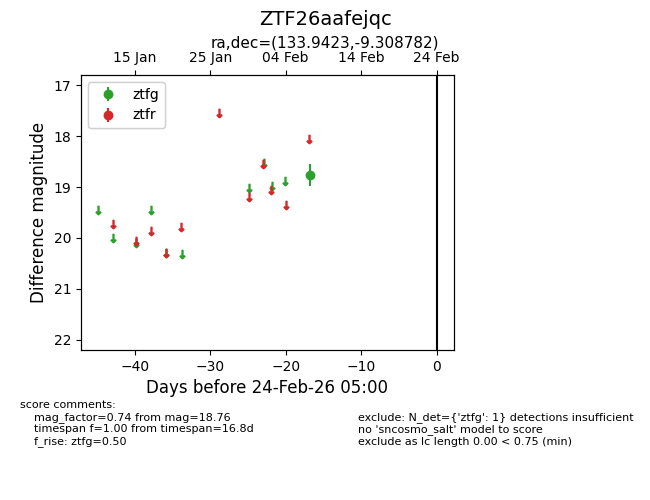
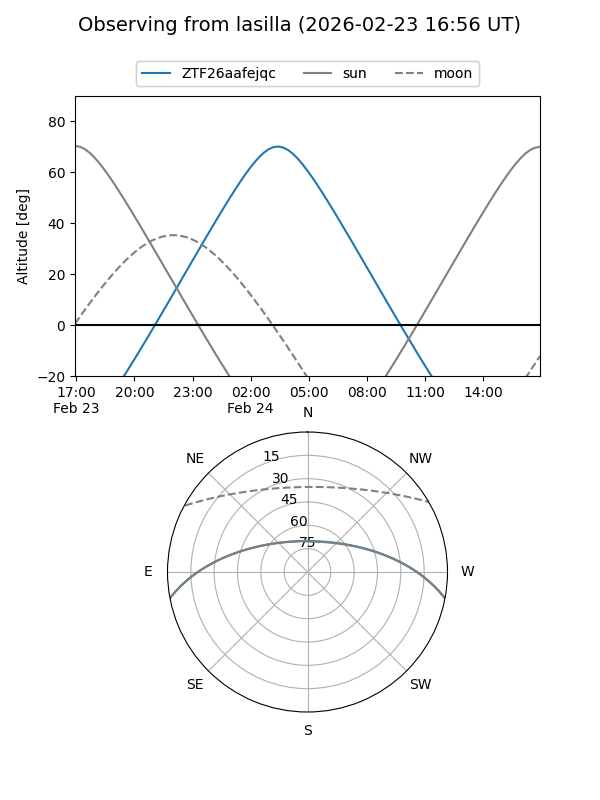
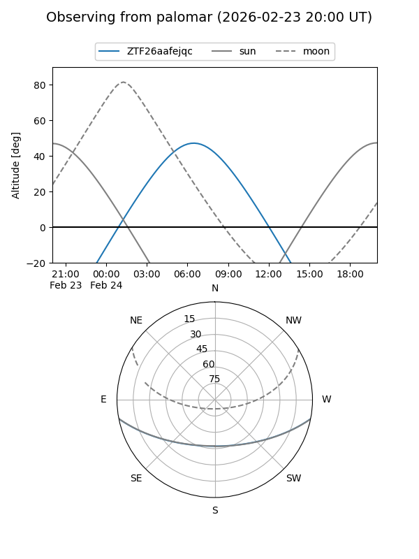

ZTF26aafejqc
Target ZTF26aafejqc at 2026-02-24 09:08
Aliases and brokers:
FINK: link
Lasair: link
ALeRCE: link
alt names
ZTF26aafejqc (ztf,fink_ztf)
Coordinates:
equatorial (ra, dec) = 133.9423,-9.30878
equatorial (HMS+DMS) = 08:55:46.15,-09:18:31.62
galactic (l, b) = (236.9314,+22.31333)
Flags:
Photometry:
last ztfg=18.76
1 ztfg detections
Lightcurve

Visibility


Additional plots